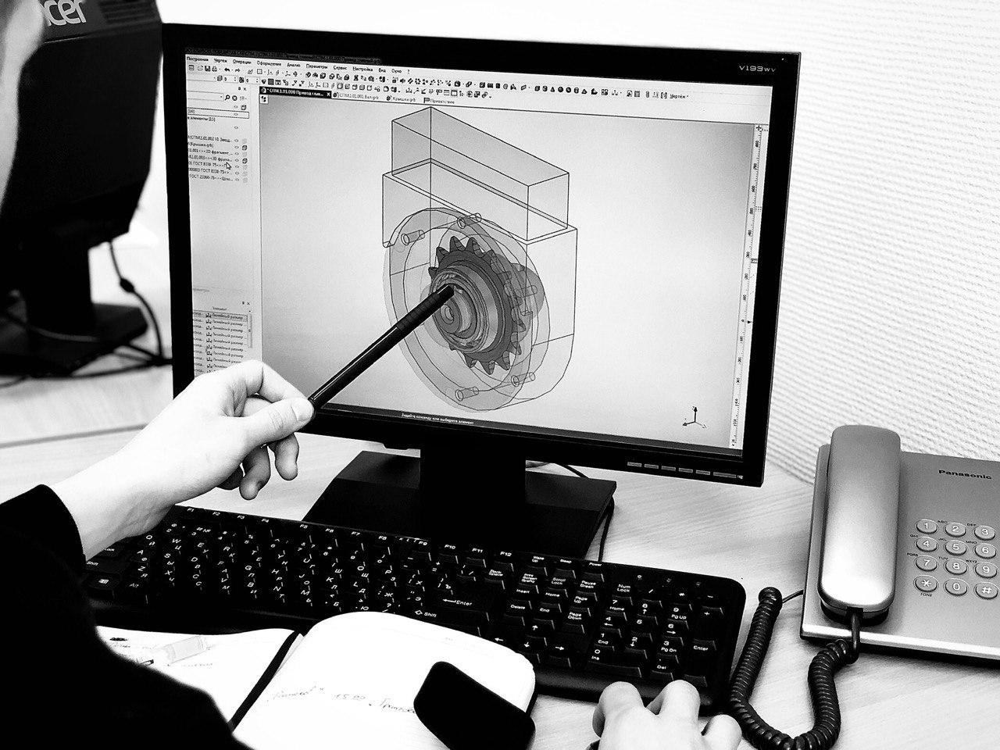

Команда СКБ ПОБЕДИТ при поддержке Фонда содействия инновациям в рамках реализации программы «СТАРТ» приступила к разработке нового технологичного станка для ремонта трубопроводной арматуры.

Приступили к моделированию реальных условий работы переносного станка для шлифования и притирки уплотнительных поверхностей. На фото имитация погружения приводной стойки в задвижку клиновую.

Продолжаем освещать этапы разработки инновационного станка для шлифования и притирки трубопроводной арматуры. Сборка приводной штанги в разрезе.